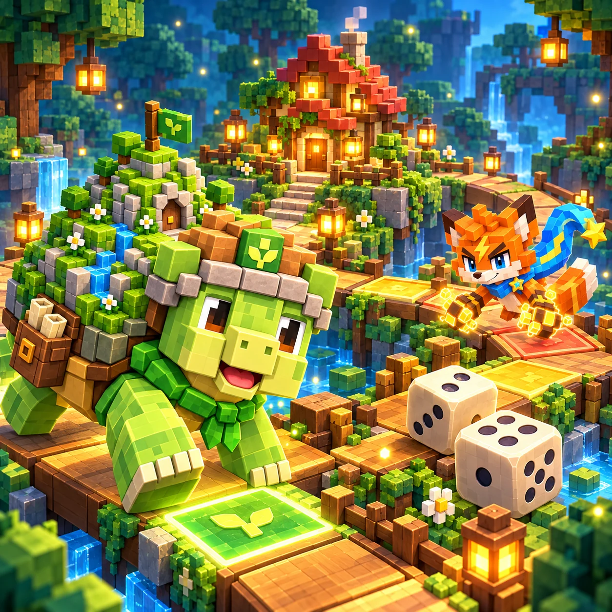

Lantern wood
Free

Roll, choose a companion and find the safe way home.
Stage 1 / 60
 Diamonds 0
Diamonds 0
Permanent appearance · same rules
Free
Clear 5 stages
5 diamonds
Clear 30 stages for the lantern frame
Roll first, then choose which friend moves.
Bring both turtle companions home before the fox team across 60 short, authored board races. Your choices decide which friend advances and which stays safe. The second chapter adds alternating tide gates and a free one-use raft.
Roll the die, then tap companion 1 or 2. The next two rolls for each team are visible, so plan a landing before committing. The fox team takes its turn after you. Every retry uses the same sequence, allowing you to learn from a different choice.
Each team follows 24 shared spaces and its own home lane. Reach 26 by exact count. Landing on an opponent on an ordinary space returns it to camp; passing it does not. Safe stones prevent returns. A bridge advances three more spaces. Later routes require supplies, sometimes in a marked order.
A successful saved clear unlocks the next stage. Undo and Retry are free. A rival win or the turn limit ends the attempt with a chance to try again. Five clears unlock moss-stone bases; thirty unlock a lantern result frame. The optional five-diamond Aurora board is a permanent appearance and changes no rules.
Use touch or a pointer, or Space to roll and 1 / 2 to choose. Progress and best turn counts stay in this browser. Clearing site data can remove them. Shared wallet ownership restores a purchased appearance. No account-based progress transfer is promised.
Before choosing the leading friend, compare the other friend’s landing with the rival’s next move. A safe stop can be worth more than distance. With ordered supplies, leave one friend behind to collect the first bag while the other prepares for the second.